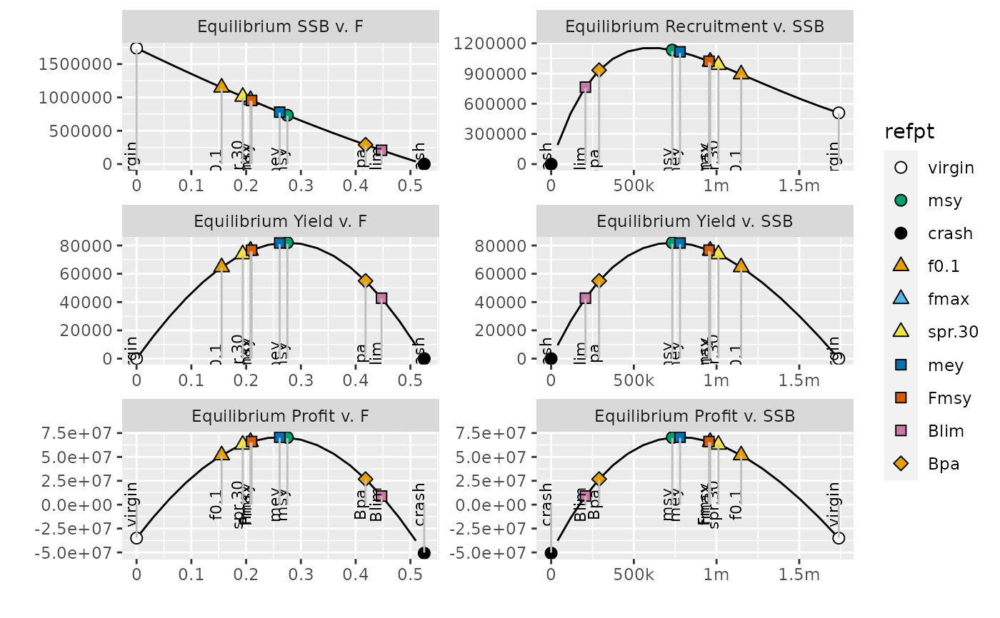

addFLBRP.RdReference points computed outside of FLBRP can be added to the @refpts
slot of an FLBRP object. A subsequent call to brp() will compute all
other quantities related to this reference point.
# S4 method for FLBRP,FLPar +(e1, e2)
| e1 | A FLBRP object |
|---|---|
| e2 | A FLPar containing a set of reference points. |
A FLBRP object with the added and calculated reference points.
The reference points to be added are passed as an FLPar object. Names of
these reference points need to follow this convention:
For SSB reference points, name should strat with "B", e.g. "Blim".
For F reference points, first letter must be "F", e.g. "Fmsy".
Yield reference points should start with "C", e.g. "Cpa".
For recruitment reference points, use "R" as starting letter, e.g. "R0".
brp
The FLR Team
